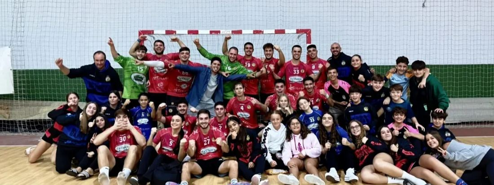

Temporada 2025 / 2026
Un club, dos territorios: el pabellón y la arena.
El Club Balonmano Barbate lleva desde 1997 formando jugadoras y jugadores en Barbate, Cádiz. Un mismo escudo, dos disciplinas: la pista del pabellón y el balonmano playa.
Dos disciplinas, un mismo club
Pista y playa
Balonmano Pista
El pabellón, cada fin de semana
Nuestros equipos de pista entrenan y compiten en el Pabellón Municipal de Av. Joaquín Blume, formando categorías desde la escuela hasta el sénior.
Ver equipos de pista
Balonmano Playa
La arena, en verano
Con Barbate y su litoral como escenario natural, el equipo de balonmano playa lleva el nombre del club a la arena en los torneos de la Costa de la Luz.
Ver balonmano playaNuestra casa · Balonmano Pista
El pabellón
Entrenamos y jugamos en el Pabellón Municipal, Av. Joaquín Blume, 14, 11160 Barbate, Cádiz. Toda la afición tiene su sitio en las gradas cada jornada, celebrando cada victoria como esta.
Cómo llegar